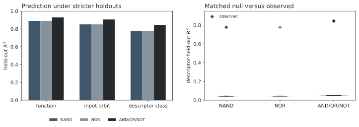
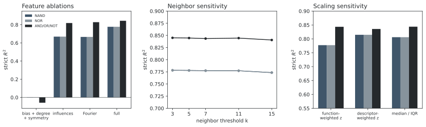

1. Problem and formal setup
Takeaway. Meaning strongly correlates with and predicts representation cost, but does not completely dictate it: even the full descriptor leaves a nonzero within-class residual, and the chosen gate language still matters.
Let \(\mathcal B_n=\{f:\{0,1\}^n\to\{0,1\}\}\), with \(n\in\{3,4\}\). A formula language \(\mathcal L\) consists of variables \(x_0,\ldots,x_{n-1}\) and a fixed gate basis. Formulas are rooted trees, and size \(|e|\) is the number of gates. This basis-relative notion descends from classical switching synthesis [1] and remains central in modern exact synthesis [6], [7].
The three languages are NAND, NOR, and ordered AND/OR/NOT. They are functionally complete but assign different costs to the same truth table. Define the syntax-free descriptor
Here \(b\) is signed output bias, \(I_i\) is variable influence, \(E_d\) is Walsh–Fourier energy at degree \(d\), and the stabilizer is under input permutations. These coordinates are computed from the truth table and contain no gate or formula data. Influence and Fourier summaries have classical connections to circuit structure and learnability [2], [3]; O’Donnell and Servedio directly relate influence to decision-tree size [4].
Proof. Relabeling every leaf is a size-preserving bijection of formulas. Bias, sorted influences, Fourier energy by degree, algebraic degree, and stabilizer cardinality are coordinate-permutation invariants.
2. Exact synthesis
Let \(M_\ell\subseteq\mathcal B_n\) contain the functions whose minimum formula size is exactly \(\ell\), with \(M_0\) the variable truth tables. If \(\mathcal O_r\) is the set of \(r\)-ary gates, define
Proof. Every size-\(\ell\) formula has a root gate and subformula sizes summing to \(\ell-1\). In a minimum formula, every subformula must itself be minimum for the function it computes; otherwise replacing it would shorten the whole formula. Thus every minimum formula occurs in \(R_\ell\), and removing earlier layers leaves exactly the new minima.
Vectorized evaluation reaches all 65,536 four-input truth tables. The implementation independently reproduces every existing three-input minimum and verifies \(K_{\rm NAND}(f)=K_{\rm NOR}(\neg f(\neg x))\) over the complete four-input universe.
| Universe | Functions | \(S_n\) orbits | Descriptor classes | Maximum minima |
|---|---|---|---|---|
| \(n=3\) | 256 | 80 | 36 | NAND/NOR 14 |
| \(n=4\) | 65,536 | 3,984 | 675 | NAND/NOR 26; A/O/N 19 |
Table 1. Complete synthesis scale. Four-input mean minima are 12.231 gates for NAND/NOR and 10.141 for AND/OR/NOT.
3. Prediction and falsification protocol
Descriptor coordinates are standardized. For a test function \(f\), let \(T(f)\) be the permitted training functions and \(r_k(f)\) the distance to its \(k\)th nearest member. To remove arbitrary ordering when distances tie, define
We fix \(k=7\) and include the complete boundary tie shell. Three nested protocols remove only \(f\), its complete \(S_n\) orbit, or its complete descriptor fiber \(\psi_n^{-1}(\psi_n(f))\). The strict protocol therefore contains neither an input-renamed copy nor any function with the same descriptor.
The descriptor ceiling predicts each function by its descriptor-class mean. It is the largest possible \(R^2\) for any predictor using only these exact classes. The matched null permutes complexity within exact signed-bias, algebraic-degree, and stabilizer-size strata, testing
The plus-one correction prevents zero Monte Carlo \(p\)-values [8].
4. Results
The strict result is substantially stronger at four inputs. Without any training function sharing the test descriptor, semantics explains 77.7% of exact NAND/NOR variance and 84.3% of AND/OR/NOT variance.
| Language | Function \(R^2\) | Orbit \(R^2\) | Strict \(R^2\) | Ceiling \(R^2\) | RMSE | Null 95% |
|---|---|---|---|---|---|---|
| NAND | 0.890 | 0.851 | 0.777 | 0.893 | 1.505 | [0.038, 0.048] |
| NOR | 0.890 | 0.851 | 0.777 | 0.893 | 1.505 | [0.038, 0.048] |
| AND/OR/NOT | 0.929 | 0.906 | 0.843 | 0.931 | 1.031 | [0.047, 0.056] |
Table 2. Four-input prediction. No matched permutation reaches an observed strict result, so \(p=1/1001<0.001\) in every language.

The same tie-aware protocol at three inputs gives strict \(R^2\) values 0.538, 0.538, and 0.589. The corresponding four-input values are 0.777, 0.777, and 0.843, so the stronger result is not a tie-policy artifact.
| Features | NAND \(R^2\) | NOR \(R^2\) | AND/OR/NOT \(R^2\) |
|---|---|---|---|
| Bias, degree, symmetry | 0.002 | 0.002 | -0.059 |
| Influences only | 0.669 | 0.669 | 0.819 |
| Fourier energy only | 0.666 | 0.666 | 0.828 |
| Without influences | 0.637 | 0.637 | 0.636 |
| Without Fourier | 0.791 | 0.791 | 0.806 |
| Full descriptor | 0.777 | 0.777 | 0.843 |
Table 3. Four-input descriptor ablations under strict holdout. Influence and Fourier coordinates are independently predictive; bias, degree, and symmetry alone are not.

Representation still matters. Spearman correlations of exact cost are 0.664 for NAND versus NOR and 0.860 for each comparison with AND/OR/NOT. Identical aggregate NAND/NOR prediction scores arise from duality and invariant, tie-aware evaluation; their functionwise rankings are not identical.
5. Interpretation and limitations
The complete four-input experiment strengthens a narrow claim: elementary properties of a Boolean function contain substantial information about exact minimal representation cost beyond input renaming, descriptor duplication, and the matched effects of bias, degree, and symmetry. The strict predictor approaches the descriptor ceiling: 0.777 of a maximum 0.893 for NAND/NOR and 0.843 of 0.931 for AND/OR/NOT. This complements analytic lower-bound programs based on Fourier concentration and related measures [2], [5]; the present result is finite, predictive, and exact rather than asymptotic.
It does not show that “meaning determines difficulty.” Identical descriptors retain within-class cost variation, cross-language rankings are imperfect, and coordinate weighting changes the exact prediction. The universe is complete but limited to four inputs, three related classical bases, and a hand-designed descriptor. Stronger follow-up tests should use selected five-input families or exact databases, substantially different computational models, and learned metrics evaluated under the same fiber holdout.
Reproducibility. The checked-in four-input experiment generates every exact target, fold, ablation, robustness check, and all 1,000 null draws (seed 0). It uses no model APIs or cloud services.
References
- C. E. Shannon, “The synthesis of two-terminal switching circuits,” Bell System Technical Journal, 28:59–98, 1949.
- N. Linial, Y. Mansour, and N. Nisan, “Constant depth circuits, Fourier transform, and learnability,” Journal of the ACM, 40(3):607–620, 1993.
- R. O’Donnell, Analysis of Boolean Functions. Cambridge University Press, 2014; revised arXiv edition, 2021.
- R. O’Donnell and R. A. Servedio, “Learning monotone decision trees in polynomial time,” SIAM Journal on Computing, 37(3):827–844, 2007.
- A. Tal, “Formula lower bounds via the quantum method,” in Proceedings of the 49th ACM STOC, pp. 1256–1268, 2017.
- W. Haaswijk, M. Soeken, A. Mishchenko, and G. De Micheli, “SAT-based exact synthesis: Encodings, topology families, and parallelism,” IEEE TCAD, 39(4):871–884, 2020.
- H. Pan and Z. Chu, “Exact synthesis based on semi-tensor product circuit solver,” in Proceedings of DATE, 2023.
- B. Phipson and G. K. Smyth, “Permutation \(p\)-values should never be zero,” Statistical Applications in Genetics and Molecular Biology, 9:39, 2010.